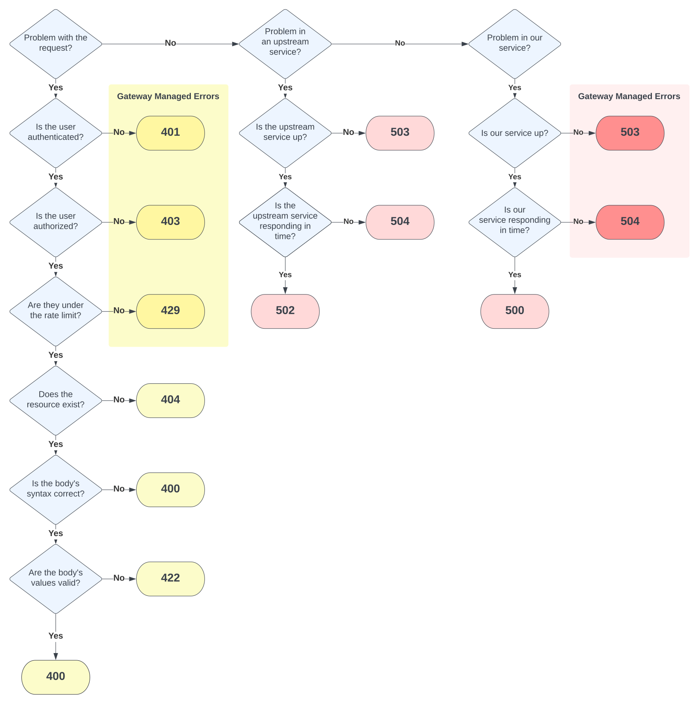

Errors¶
Guidance
- Error fields should follow RFC 7807
- An operation should be able to return multiple errors in one response.
- The
statusfield should match the HTTP status code being returned. - The
titlefield should be the generic class of the error and consistent across the API. - The
detailfield should be specific to the error at hand. - If an error is in the request, a
sourcefield should point to it.
Error Schemas¶
The error schema should match that of the information model you are using. This guide recommends using JSON::API unless an industry-specific format like FHIR is required. We recommend JSON::API because it has a well thought-out, extensible, and relatively simple error model.
An example of a JSON::API-formatted 422 'Unprocessable Entity' error is:
422 Unprocessable Entity | |
|---|---|
FHIR has a different error schema (OperationOutcome resource). An example is:
Multiple errors¶
Operations should be able to return multiple errors and providers should return errors for all the issues with the request at once. For example, if 2 fields are invalid, return both so the consumer is aware of all the issues that must be corrected, instead of raising an error once the first invalid field is processed. If the error statuses are different but have the same hundredth, for example, both are 4xx, return the base generic value (400). If the errors have mixed hundredth values return a 500.
Choosing an error code¶
Choosing the correct HTTP status code for an error can be confusing. With VA APIs, the error will originate from one of three sources: from the consumer’s request; an upstream service the API depends on; or the API itself, such as the web application and its components.
- Request errors: Issues caused by requests are a flavor of a
400error (4xx). - Upstream errors: Errors from upstream services are
502,503, or504. - Application errors: Always return a
500.
The Lighthouse gateway will handle some of these errors for you. Within the 4xx range, the gateway handles the authorization and authentication errors (401 and 403) as well as the rate limiting errors (429). The gateway will also handle your service being unavailable (503) or failing to respond to a request in time (504).
The flowchart below can help you decide which HTTP status code to return for an error.
